Produzione, valutazione e gestione di documenti informatici (slide 1–40) e open data (slide 41–46): tutte le slide originali dell’UD12, con le integrazioni essenziali per le 2 ore e altre facoltative.
Le slide del modulo · le slide originali sono intatte, quelle con l’etichetta colorata sono integrazioni
UD12 · Competenze digitali · Incontro 3 di 4 · venerdì 13 novembre 2026 · 2 ore online
Documenti informatici e open data
Come si sceglie il software giusto, come si produce un documento che regge nel tempo e come si trovano dati pubblici da usare nel proprio progetto d’impresa.
Slide originali UD12 · 1–46+ simulazioni ed eserciziDocente: Ing. Antonio Adinolfi
L’ultima volta che avete perso un documento importante: che cosa è successo?
Un file sovrascritto, una chiavetta persa, un allegato che il destinatario non riusciva ad aprire… Raccontatelo in una frase.
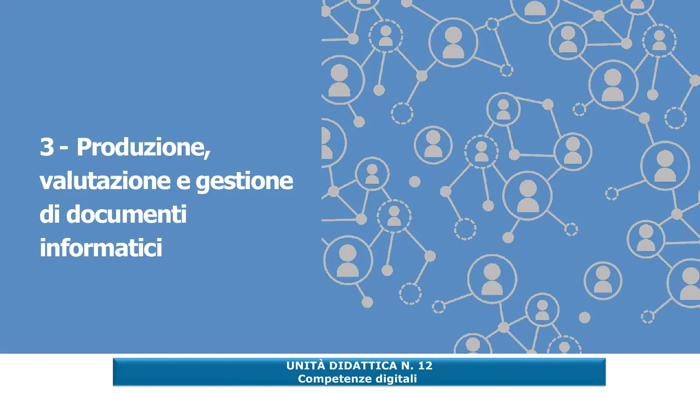
Sezione 3 · Produzione, valutazione e gestione di documenti informatici
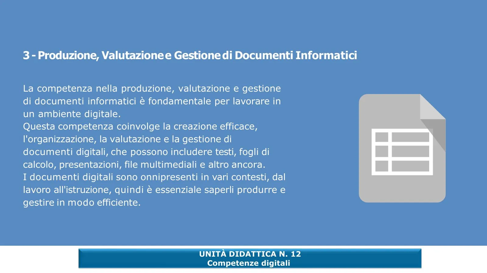
La competenza nella produzione, valutazione e gestione di documenti informatici è fondamentale per lavorare in un ambiente digitale. Questa competenza coinvolge la creazione efficace, l'organizzazione, la valutazione e la gestione di documenti digitali, che possono includere testi, fogli di calcolo, presentazioni, file multimediali e altro ancora. I documenti digitali sono onnipresenti in vari contesti, dal lavoro all'istruzione, quindi è essenziale saperli produrre e gestire in modo efficiente.
I documenti che produrrete davvero
Documento
Strumento
Regola d’oro
Descrizione dell’iniziativa (voucher)
Writer / Word / Google Documenti
Max 5.000 caratteri; dati con fonte
Piano d’impresa (contributo)
Testo + foglio di calcolo
Tabelle con formule, non numeri scritti a mano
Preventivi dei fornitori
PDF ricevuti
Un file per preventivo, nome con data e fornitore
Format di domanda
Generato dalla piattaforma
Si firma digitalmente, non si modifica
Listino, volantino, sito
Draw / Canva / Documenti
Foto vostre, immagini con licenza
Tutto quello che vediamo oggi serve a produrre bene questi cinque documenti.
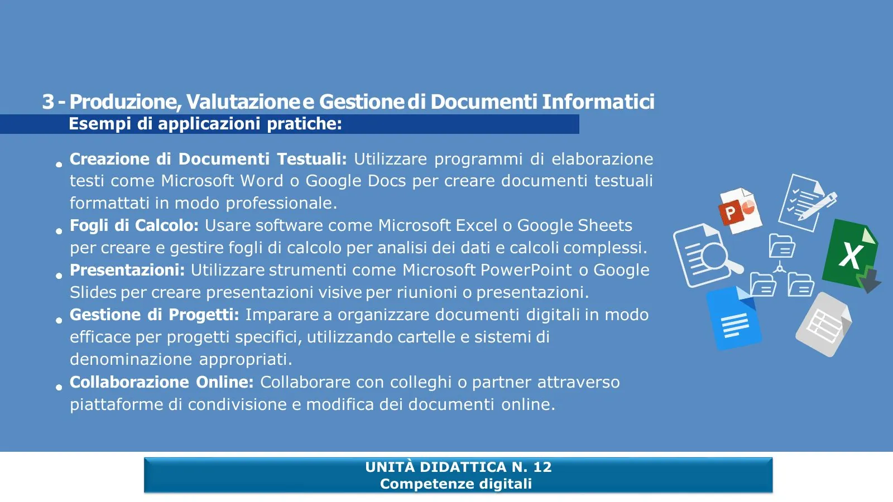
Esempi di applicazioni pratiche: Creazione di Documenti Testuali: Utilizzare programmi di elaborazione testi come Microsoft Word o Google Docs per creare documenti testuali formattati in modo professionale. Fogli di Calcolo: Usare software come Microsoft Excel o Google Sheets per creare e gestire fogli di calcolo per analisi dei dati e calcoli complessi. Presentazioni: Utilizzare strumenti come Microsoft PowerPoint o Google Slides per creare presentazioni visive per riunioni o presentazioni. Gestione di Progetti: Imparare a organizzare documenti digitali in modo efficace per progetti specifici, utilizzando cartelle e sistemi di denominazione appropriati. Collaborazione Online: Collaborare con colleghi o partner attraverso piattaforme di condivisione e modifica dei documenti online.
Il ciclo di vita di un documento
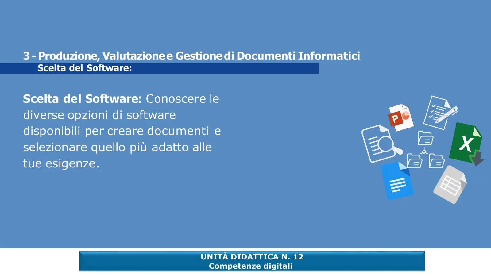
Scelta del Software: Scelta del Software: Conoscere le diverse opzioni di software disponibili per creare documenti e selezionare quello più adatto alle tue esigenze.
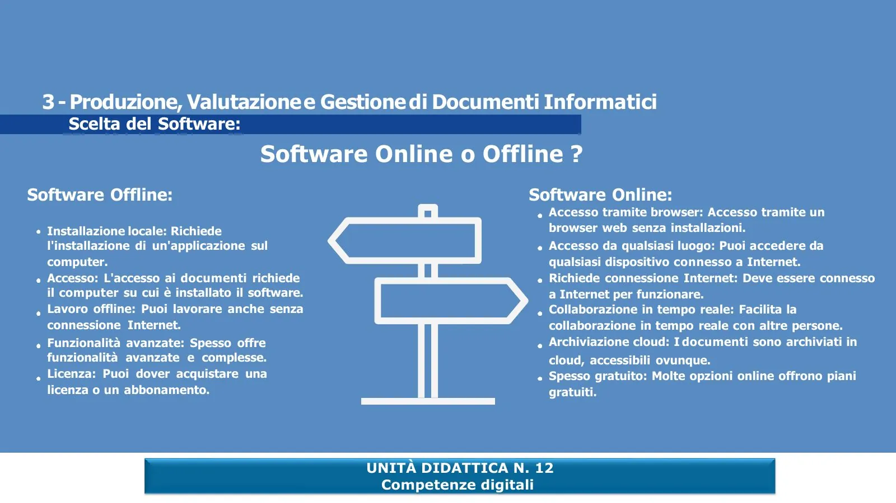
Scelta del Software: Software Online o Offline ? Software Offline: Software Online: Accesso tramite browser: Accesso tramite un Installazione locale: Richiede browser web senza installazioni. l'installazione di un'applicazione sul Accesso da qualsiasi luogo: Puoi accedere da computer. qualsiasi dispositivo connesso a Internet. Accesso: L'accesso ai documenti richiede Richiede connessione Internet: Deve essere connesso il computer su cui è installato il software. a Internet per funzionare. Lavoro offline: Puoi lavorare anche senza Collaborazione in tempo reale: Facilita la connessione Internet. collaborazione in tempo reale con altre persone. Funzionalità avanzate: Spesso offre Archiviazione cloud: I documenti sono archiviati in funzionalità avanzate e complesse. cloud, accessibili ovunque. Licenza: Puoi dover acquistare una Spesso gratuito: Molte opzioni online offrono piani licenza o un abbonamento. gratuiti.
Che cosa succede se cade la connessione?
Online o installato: che cosa cambia nella vita di tutti i giorni
Situazione
App installata
App nel browser
Cade la connessione in laboratorio
Continuate a lavorare
Vi fermate (salvo modalità offline)
Il PC si rompe
File persi senza backup
File nel cloud
Lavorate con il socio sullo stesso file
Uno alla volta
Insieme, in tempo reale
Dal telefono, in fila alla posta
Dipende dall’app
Sempre
Dove stanno i vostri dati
Sul vostro disco
Sui server del fornitore (dove? con quali regole?)
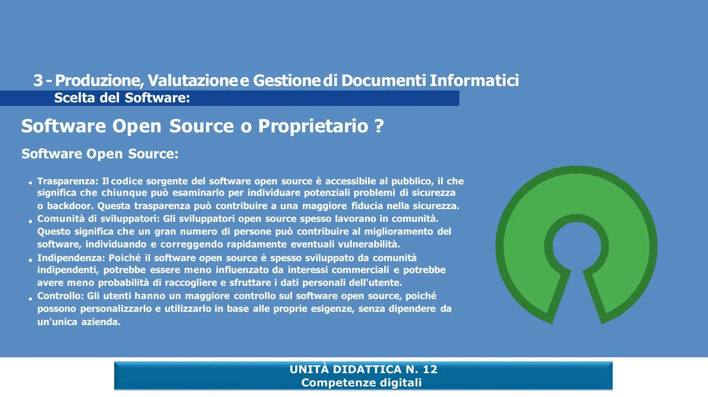
Scelta del Software: Software Open Source o Proprietario ? Software Open Source: Trasparenza: Il codice sorgente del software open source è accessibile al pubblico, il che significa che chiunque può esaminarlo per individuare potenziali problemi di sicurezza o backdoor. Questa trasparenza può contribuire a una maggiore fiducia nella sicurezza. Comunità di sviluppatori: Gli sviluppatori open source spesso lavorano in comunità. Questo significa che un gran numero di persone può contribuire al miglioramento del software, individuando e correggendo rapidamente eventuali vulnerabilità. Indipendenza: Poiché il software open source è spesso sviluppato da comunità indipendenti, potrebbe essere meno influenzato da interessi commerciali e potrebbe avere meno probabilità di raccogliere e sfruttare i dati personali dell'utente. Controllo: Gli utenti hanno un maggiore controllo sul software open source, poiché possono personalizzarlo e utilizzarlo in base alle proprie esigenze, senza dipendere da un'unica azienda.
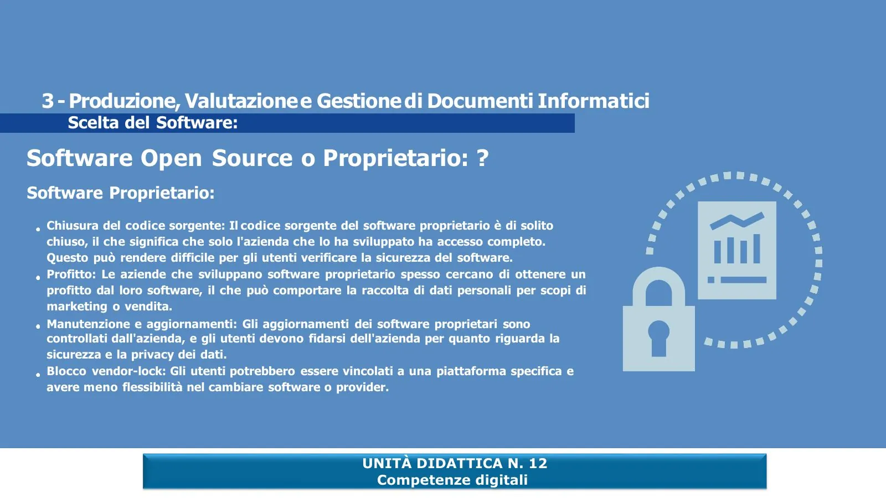
Scelta del Software: Software Open Source o Proprietario: ? Software Proprietario: Chiusura del codice sorgente: Il codice sorgente del software proprietario è di solito chiuso, il che significa che solo l'azienda che lo ha sviluppato ha accesso completo. Questo può rendere difficile per gli utenti verificare la sicurezza del software. Profitto: Le aziende che sviluppano software proprietario spesso cercano di ottenere un profitto dal loro software, il che può comportare la raccolta di dati personali per scopi di marketing o vendita. Manutenzione e aggiornamenti: Gli aggiornamenti dei software proprietari sono controllati dall'azienda, e gli utenti devono fidarsi dell'azienda per quanto riguarda la sicurezza e la privacy dei dati. Blocco vendor-lock: Gli utenti potrebbero essere vincolati a una piattaforma specifica e avere meno flessibilità nel cambiare software o provider.
Open source o proprietario? Vero o falso
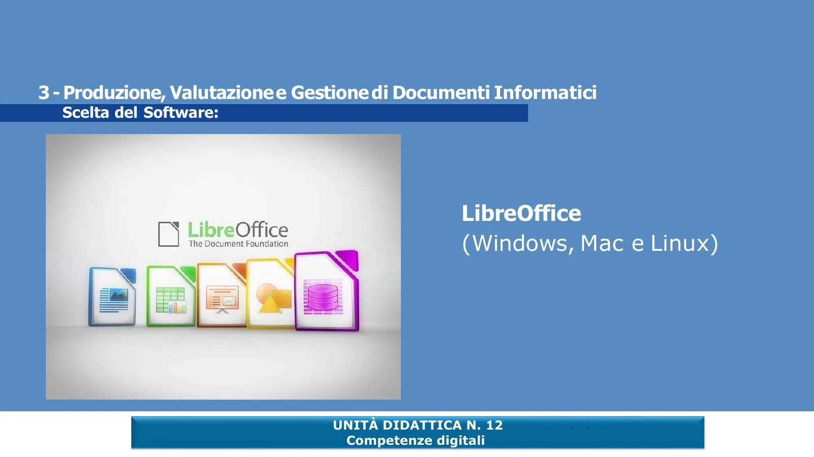
Scelta del Software: LibreOffice (Windows, Mac e Linux)
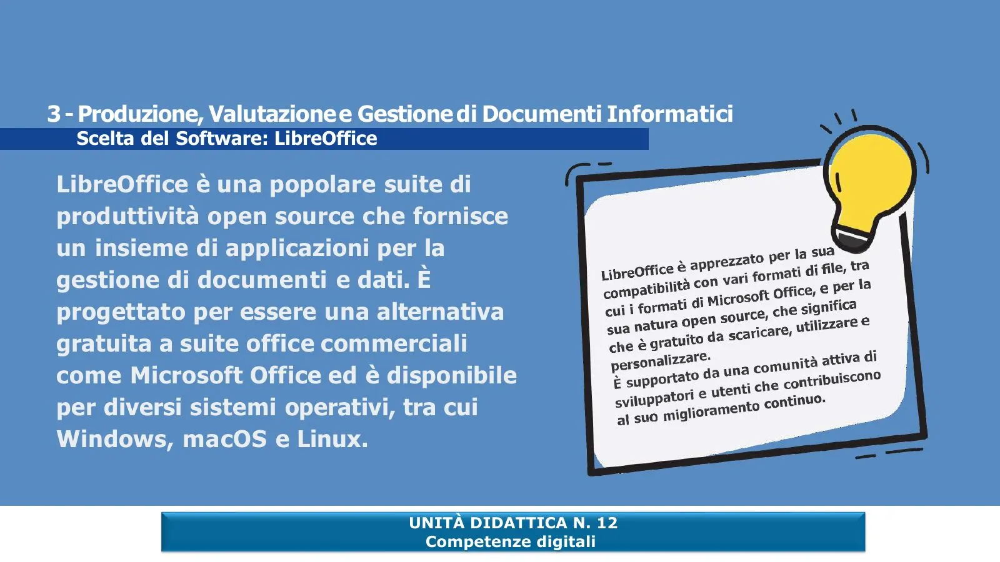
Scelta del Software: LibreOffice LibreOffice è una popolare suite di produttività open source che fornisce un insieme di applicazioni per la gestione di documenti e dati. È progettato per essere una alternativa gratuita a suite office commerciali come Microsoft Office ed è disponibile per diversi sistemi operativi, tra cui Windows, macOS e Linux.
Formati: quale usare e quando
Formato
Tipo
Aperto?
Quando usarlo
.odt · .ods · .odp
Testo, foglio, presentazione
Sì · ISO
File di lavoro con LibreOffice; archivio a lungo termine
.docx · .xlsx · .pptx
Testo, foglio, presentazione
Standard
Scambio con chi usa Microsoft Office
.pdf
Documento da leggere
Sì · ISO
Inviare una versione che non cambia aspetto; da firmare
PDF/A
PDF per conservazione
Sì · ISO
Documenti da conservare nel tempo (es. alla PA)
.csv
Dati in tabella, testo semplice
Sì
Scambiare dati, open data, import in fogli e gestionali
Regola pratica: conservate il file modificabile per lavorarci e inviate il PDF quando il destinatario deve solo leggere o firmare.
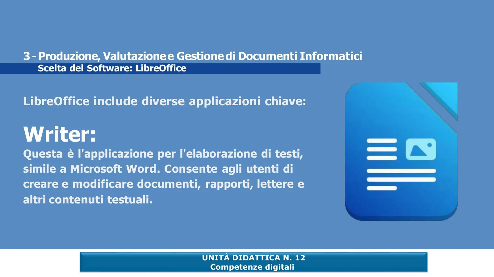
Scelta del Software: LibreOffice LibreOffice include diverse applicazioni chiave: Writer: Questa è l'applicazione per l'elaborazione di testi, simile a Microsoft Word. Consente agli utenti di creare e modificare documenti, rapporti, lettere e altri contenuti testuali.
Perché usare gli stili in Writer (e in Word)
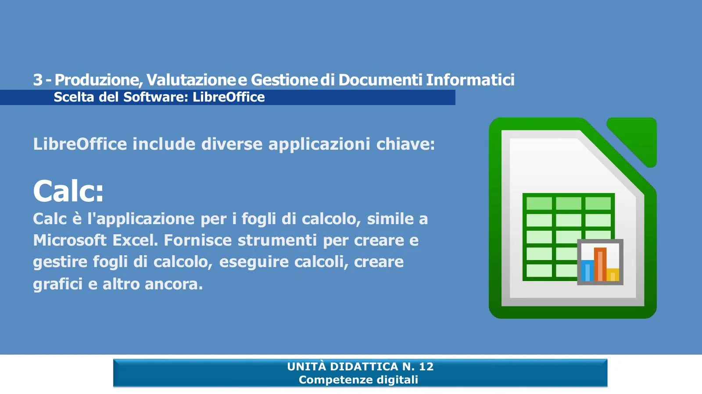
Scelta del Software: LibreOffice LibreOffice include diverse applicazioni chiave: Calc: Calc è l'applicazione per i fogli di calcolo, simile a Microsoft Excel. Fornisce strumenti per creare e gestire fogli di calcolo, eseguire calcoli, creare grafici e altro ancora.
Un foglio di calcolo per il conto mensile
Formule da conoscere =SOMMA(B3:B5) somma un intervallo =B2-B6 differenza tra celle =B7/B2*100 percentuale =MEDIA(B3:B5) media
Le formule si aggiornano da sole quando cambiano i dati: è quello che serve per la tabella dei costi del Piano d’impresa.
Quanto sono 5.000 caratteri?
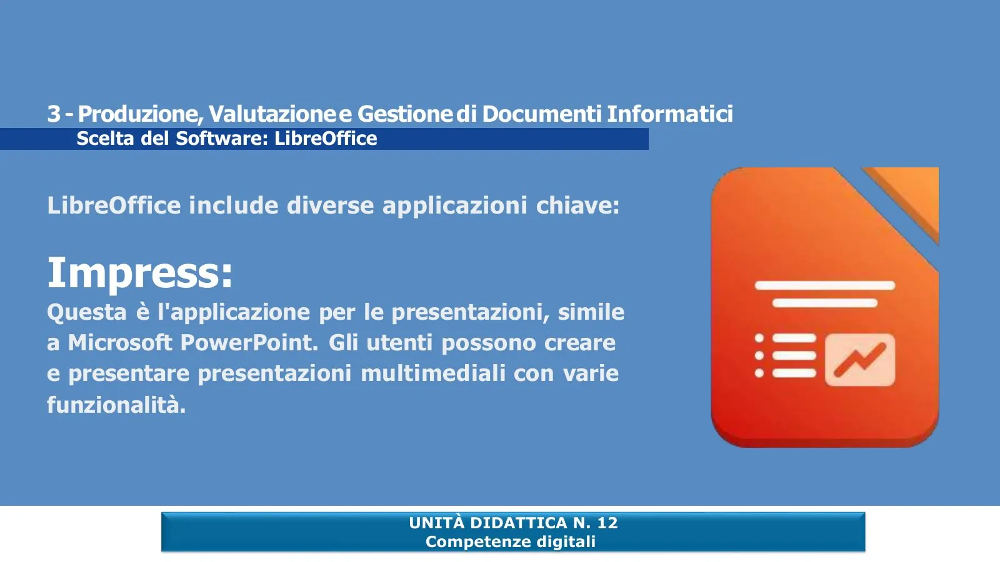
Scelta del Software: LibreOffice LibreOffice include diverse applicazioni chiave: Impress: Questa è l'applicazione per le presentazioni, simile a Microsoft PowerPoint. Gli utenti possono creare e presentare presentazioni multimediali con varie funzionalità.
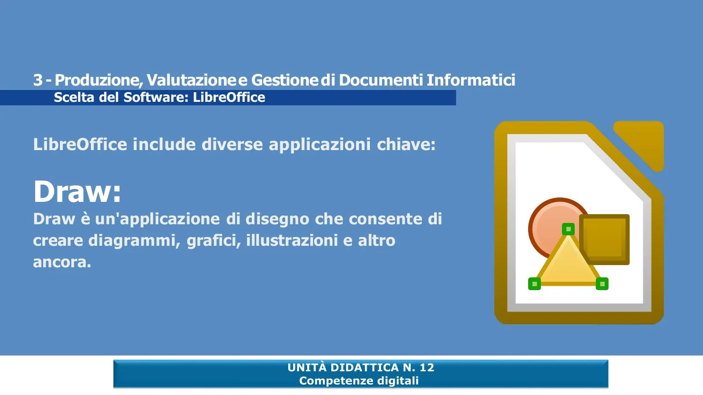
Scelta del Software: LibreOffice LibreOffice include diverse applicazioni chiave: Draw: Draw è un'applicazione di disegno che consente di creare diagrammi, grafici, illustrazioni e altro ancora.
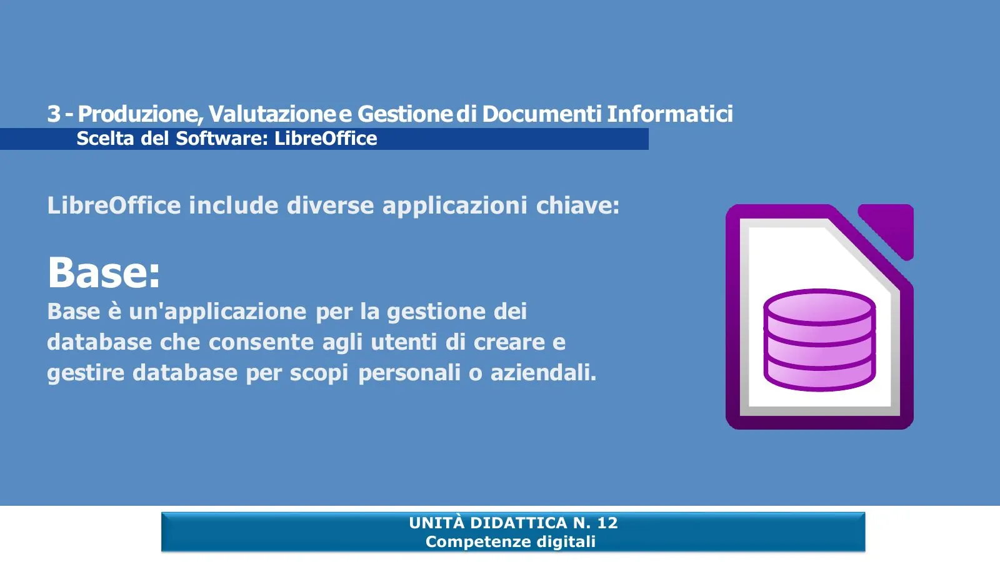
Scelta del Software: LibreOffice LibreOffice include diverse applicazioni chiave: Base: Base è un'applicazione per la gestione dei database che consente agli utenti di creare e gestire database per scopi personali o aziendali.
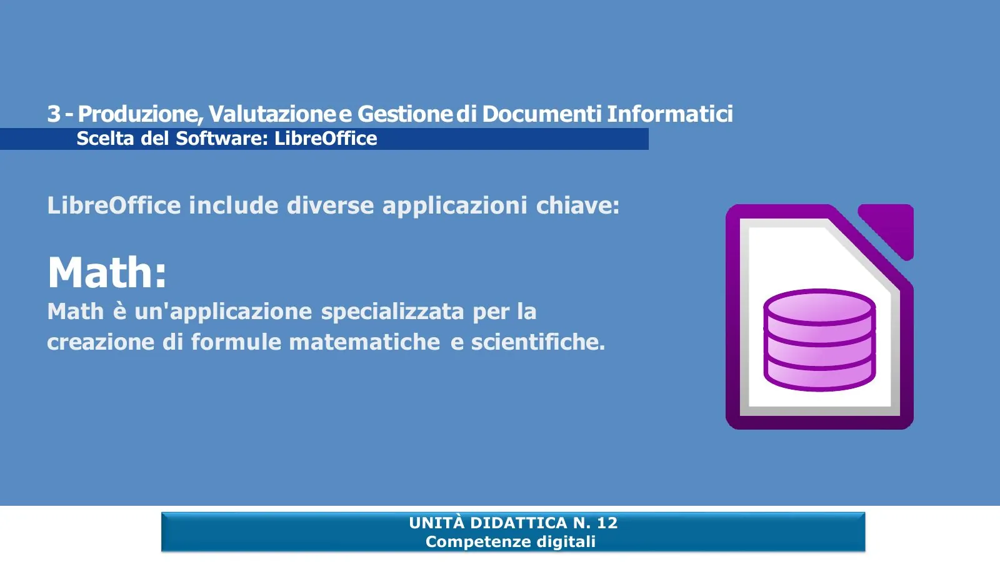
Scelta del Software: LibreOffice LibreOffice include diverse applicazioni chiave: Math: Math è un'applicazione specializzata per la creazione di formule matematiche e scientifiche.
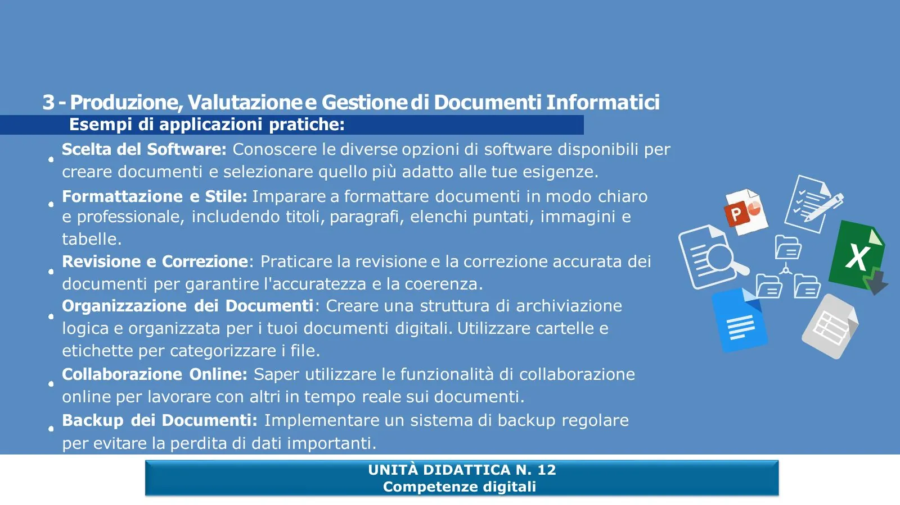
Esempi di applicazioni pratiche: Scelta del Software: Conoscere le diverse opzioni di software disponibili per creare documenti e selezionare quello più adatto alle tue esigenze. Formattazione e Stile: Imparare a formattare documenti in modo chiaro e professionale, includendo titoli, paragrafi, elenchi puntati, immagini e tabelle. Revisione e Correzione: Praticare la revisione e la correzione accurata dei documenti per garantire l'accuratezza e la coerenza. Organizzazione dei Documenti: Creare una struttura di archiviazione logica e organizzata per i tuoi documenti digitali. Utilizzare cartelle e etichette per categorizzare i file. Collaborazione Online: Saper utilizzare le funzionalità di collaborazione online per lavorare con altri in tempo reale sui documenti. Backup dei Documenti: Implementare un sistema di backup regolare per evitare la perdita di dati importanti. Sicurezza: rote menti senUNITÀ bili c DIDATTICA n password N.o12cif a a se
Laboratorio (20 minuti): il vostro primo documento ben fatto
Consegna
Aprite Writer, Word o Google Documenti.
Scrivete titolo e tre sezioni della vostra idea d’impresa: L’idea, Il mercato, Le spese.
Applicate gli stili Titolo 1 e Titolo 2.
Inserite l’indice automatico.
Salvate con un nome del tipo 2026-11-10_Idea_Cognome_v01.
Esportate in PDF.
Controllo finale
L’indice si aggiorna se cambio un titolo?
Il PDF si apre sul telefono con la stessa impaginazione?
Ho due file: quello modificabile e il PDF?
Il nome del file dice data, contenuto, autore e versione?
Trova gli errori in questo preventivo
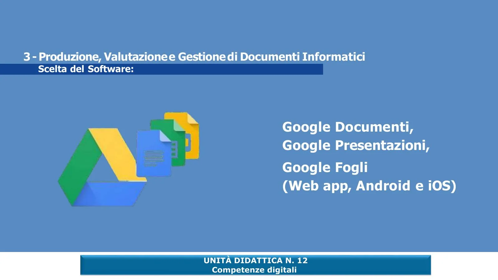
Scelta del Software: Google Documenti, Google Presentazioni, Google Fogli (Web app, Android e iOS)
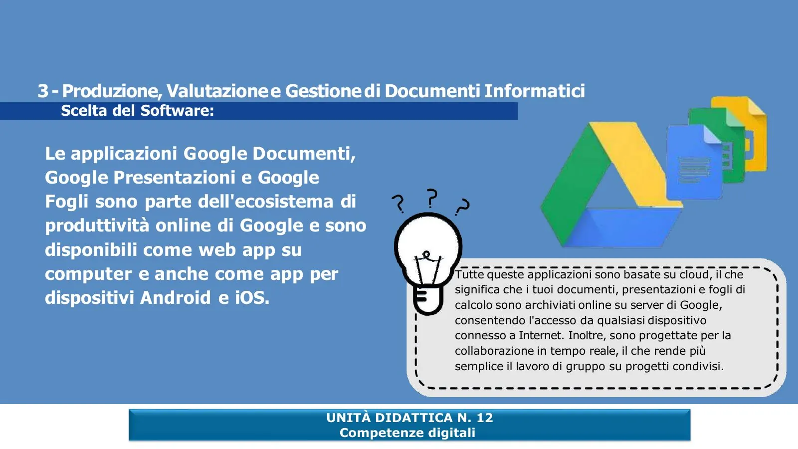
Scelta del Software: Le applicazioni Google Documenti, Google Presentazioni e Google Fogli sono parte dell'ecosistema di produttività online di Google e sono disponibili come web app su computer e anche come app per Tutte queste applicazioni sono basate su cloud, il che significa che i tuoi documenti, presentazioni e fogli di dispositivi Android e iOS. calcolo sono archiviati online su server di Google, consentendo l'accesso da qualsiasi dispositivo connesso a Internet. Inoltre, sono progettate per la collaborazione in tempo reale, il che rende più semplice il lavoro di gruppo su progetti condivisi.
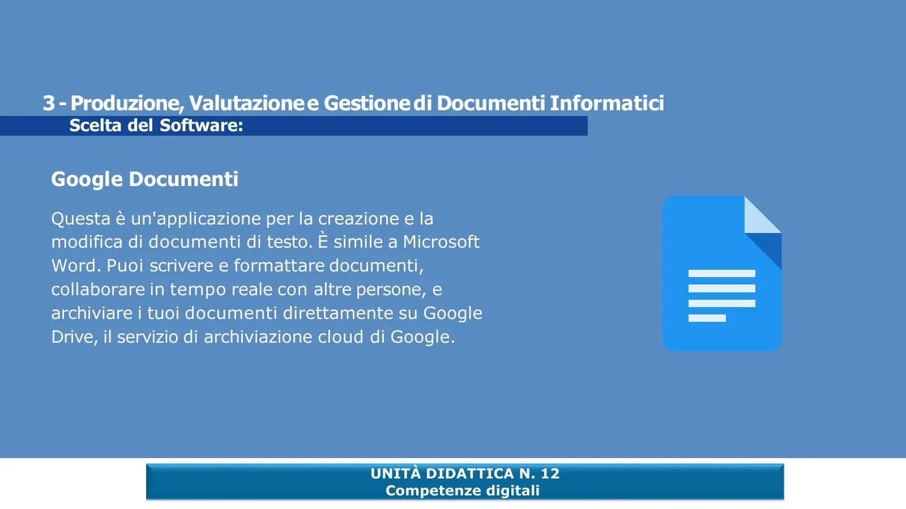
Scelta del Software: Google Documenti Questa è un'applicazione per la creazione e la modifica di documenti di testo. È simile a Microsoft Word. Puoi scrivere e formattare documenti, collaborare in tempo reale con altre persone, e archiviare i tuoi documenti direttamente su Google Drive, il servizio di archiviazione cloud di Google.
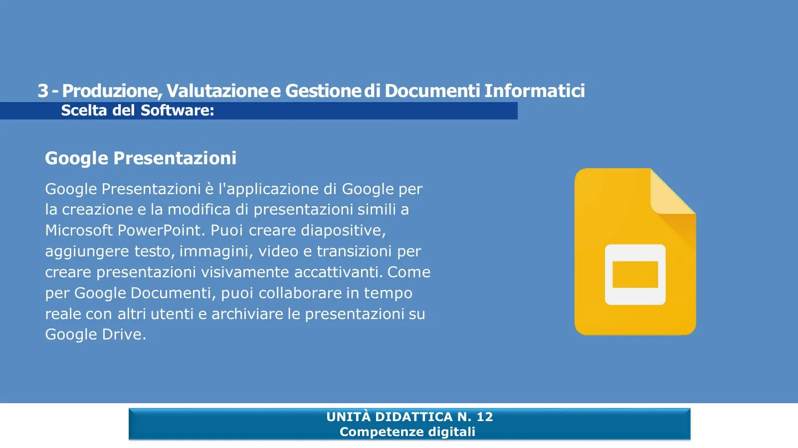
Scelta del Software: Google Presentazioni Google Presentazioni è l'applicazione di Google per la creazione e la modifica di presentazioni simili a Microsoft PowerPoint. Puoi creare diapositive, aggiungere testo, immagini, video e transizioni per creare presentazioni visivamente accattivanti. Come per Google Documenti, puoi collaborare in tempo reale con altri utenti e archiviare le presentazioni su Google Drive.
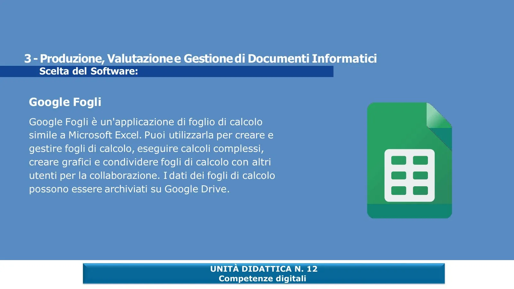
Scelta del Software: Google Fogli Google Fogli è un'applicazione di foglio di calcolo simile a Microsoft Excel. Puoi utilizzarla per creare e gestire fogli di calcolo, eseguire calcoli complessi, creare grafici e condividere fogli di calcolo con altri utenti per la collaborazione. I dati dei fogli di calcolo possono essere archiviati su Google Drive.
Collaborare in tempo reale (e tornare indietro)
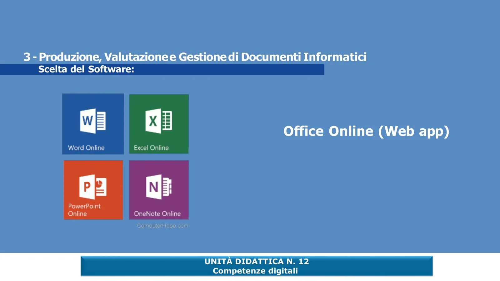
Scelta del Software: Office Online (Web app)
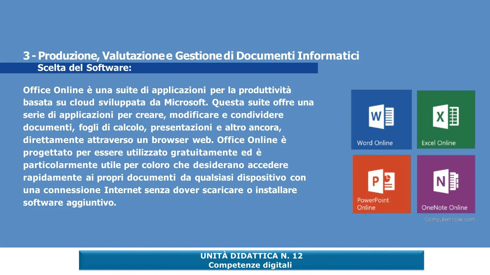
Scelta del Software: Office Online è una suite di applicazioni per la produttività basata su cloud sviluppata da Microsoft. Questa suite offre una serie di applicazioni per creare, modificare e condividere documenti, fogli di calcolo, presentazioni e altro ancora, direttamente attraverso un browser web. Office Online è progettato per essere utilizzato gratuitamente ed è particolarmente utile per coloro che desiderano accedere rapidamente ai propri documenti da qualsiasi dispositivo con una connessione Internet senza dover scaricare o installare software aggiuntivo.
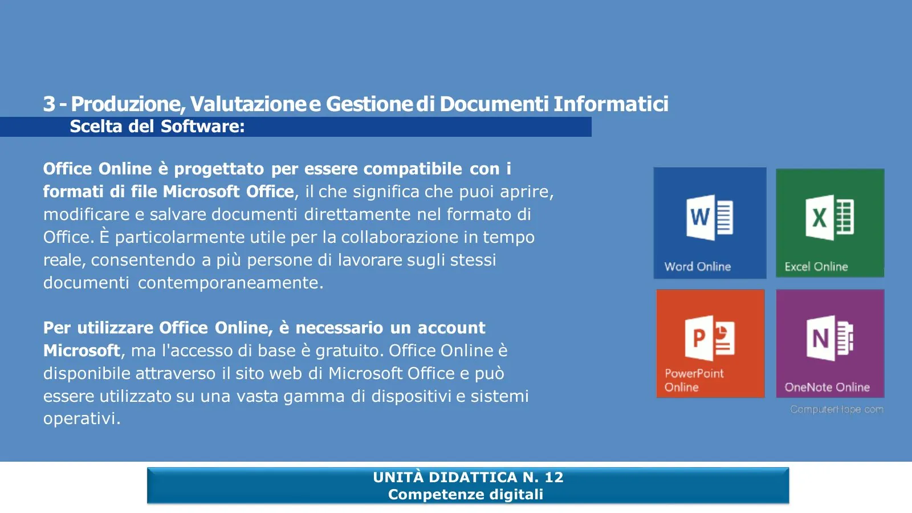
Scelta del Software: Office Online è progettato per essere compatibile con i formati di file Microsoft Office, il che significa che puoi aprire, modificare e salvare documenti direttamente nel formato di Office. È particolarmente utile per la collaborazione in tempo reale, consentendo a più persone di lavorare sugli stessi documenti contemporaneamente. Per utilizzare Office Online, è necessario un account Microsoft, ma l'accesso di base è gratuito. Office Online è disponibile attraverso il sito web di Microsoft Office e può essere utilizzato su una vasta gamma di dispositivi e sistemi operativi.
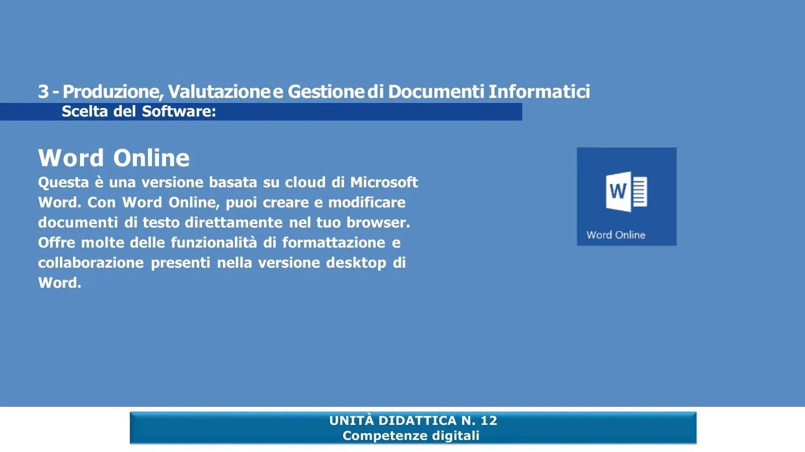
Scelta del Software: Word Online Questa è una versione basata su cloud di Microsoft Word. Con Word Online, puoi creare e modificare documenti di testo direttamente nel tuo browser. Offre molte delle funzionalità di formattazione e collaborazione presenti nella versione desktop di Word.
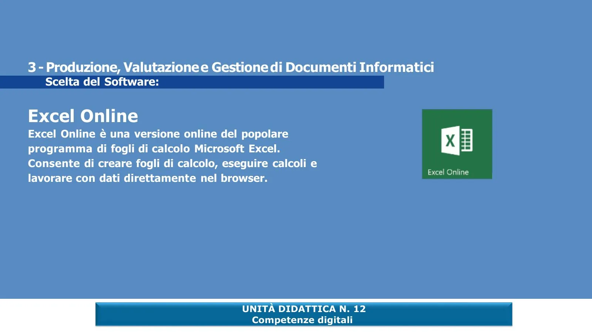
Scelta del Software: Excel Online Excel Online è una versione online del popolare programma di fogli di calcolo Microsoft Excel. Consente di creare fogli di calcolo, eseguire calcoli e lavorare con dati direttamente nel browser.
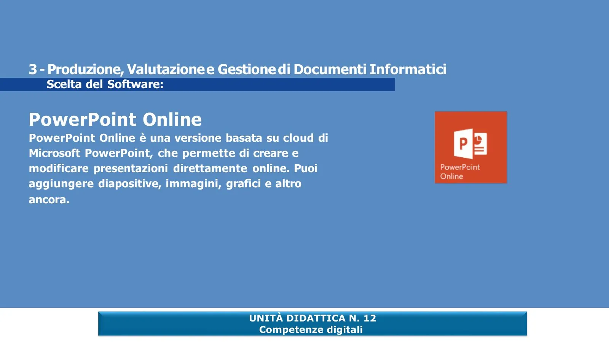
Scelta del Software: PowerPoint Online PowerPoint Online è una versione basata su cloud di Microsoft PowerPoint, che permette di creare e modificare presentazioni direttamente online. Puoi aggiungere diapositive, immagini, grafici e altro ancora.
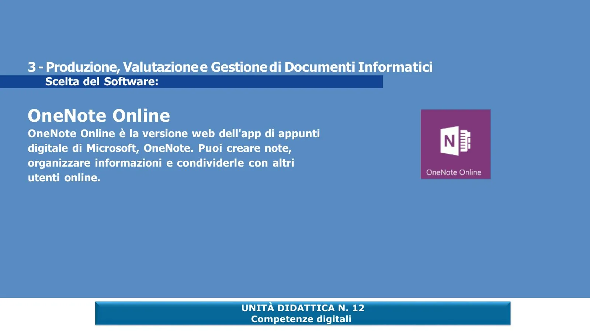
Scelta del Software: OneNote Online OneNote Online è la versione web dell'app di appunti digitale di Microsoft, OneNote. Puoi creare note, organizzare informazioni e condividerle con altri utenti online.
Tre suite a confronto
LibreOffice
Google Documenti, Fogli, Presentazioni
Microsoft 365 (app web e desktop)
Dove funziona
Installato su PC (Windows, Mac, Linux)
Browser e app per telefono
Browser; app desktop e mobili con abbonamento
Senza Internet
Sì
Solo se attivato prima
App desktop sì
Lavoro in contemporanea
Limitato
Sì, nativo
Sì, con OneDrive
Formato nativo
ODF (.odt, .ods, .odp)
Formato Google, esporta in Office/ODF/PDF
.docx, .xlsx, .pptx
Costo
Gratuito
Gratuito con account; piani a pagamento per le imprese
Web base gratuita; abbonamento per le app complete
Dove stanno i file
Sul vostro disco
Google Drive
OneDrive o disco locale
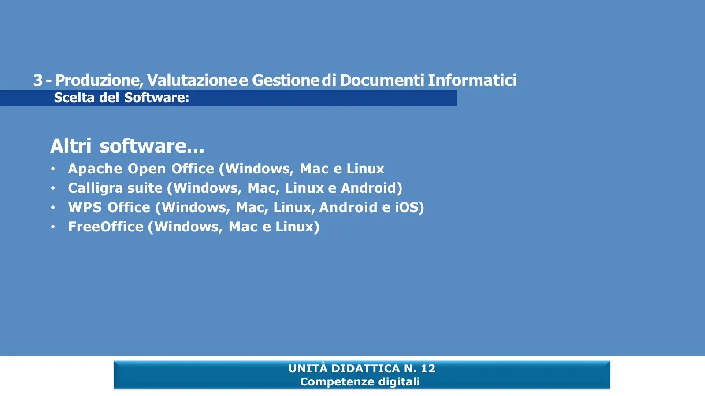
Scelta del Software: Altri software... • Apache Open Office (Windows, Mac e Linux • Calligra suite (Windows, Mac, Linux e Android) • WPS Office (Windows, Mac, Linux, Android e iOS) • FreeOffice (Windows, Mac e Linux)
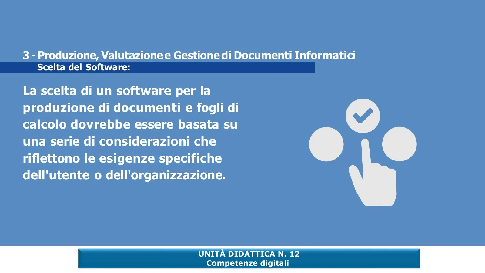
Scelta del Software: La scelta di un software per la produzione di documenti e fogli di calcolo dovrebbe essere basata su una serie di considerazioni che riflettono le esigenze specifiche dell'utente o dell'organizzazione.
Nove criteri, nove domande da farsi
1 · Esigenze Che cosa devo produrre davvero? Testi, tabelle, grafica?
2 · Compatibilità In che formato mi mandano i file clienti, fornitori, PA?
3 · Integrazione Parla con email, calendario, fatturazione?
4 · Collaborazione Lavoro da solo o con un socio?
5 · Piattaforma Windows, Mac, telefono Android o iPhone?
6 · Costo Licenza, ma anche tempo per imparare e per rimediare ai problemi.
7 · Sicurezza Aggiornamenti, dove stanno i dati, 2FA.
8 · Facilità In quanto tempo divento autonomo?
9 · Supporto Chi mi aiuta se si blocca il giorno della consegna?
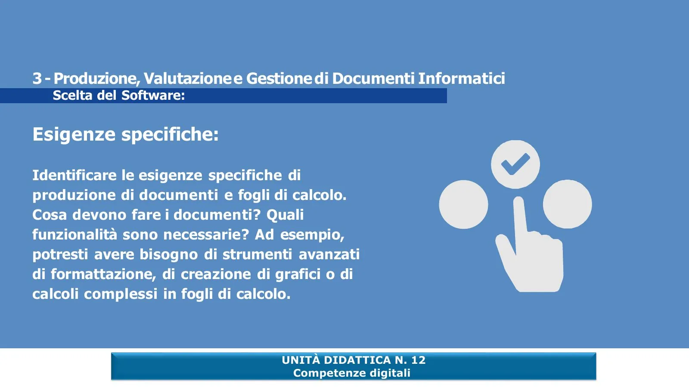
Scelta del Software: Esigenze specifiche: Identificare le esigenze specifiche di produzione di documenti e fogli di calcolo. Cosa devono fare i documenti? Quali funzionalità sono necessarie? Ad esempio, potresti avere bisogno di strumenti avanzati di formattazione, di creazione di grafici o di calcoli complessi in fogli di calcolo.
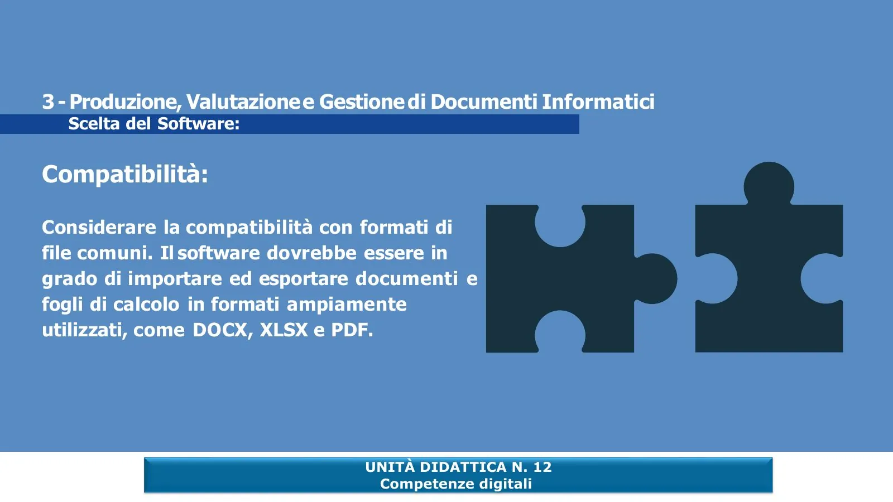
Scelta del Software: Compatibilità: Considerare la compatibilità con formati di file comuni. Il software dovrebbe essere in grado di importare ed esportare documenti e fogli di calcolo in formati ampiamente utilizzati, come DOCX, XLSX e PDF.
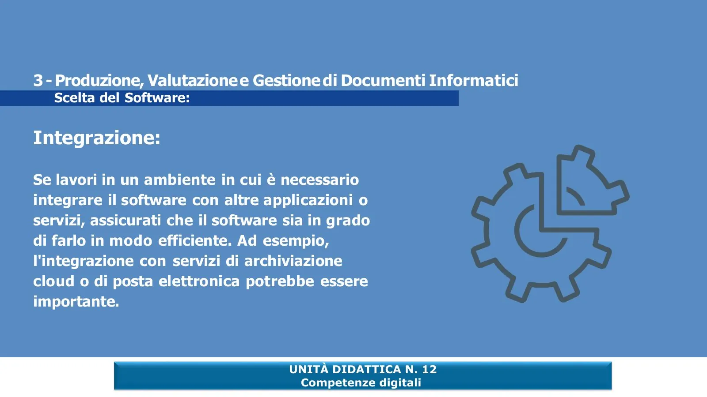
Scelta del Software: Integrazione: Se lavori in un ambiente in cui è necessario integrare il software con altre applicazioni o servizi, assicurati che il software sia in grado di farlo in modo efficiente. Ad esempio, l'integrazione con servizi di archiviazione cloud o di posta elettronica potrebbe essere importante.
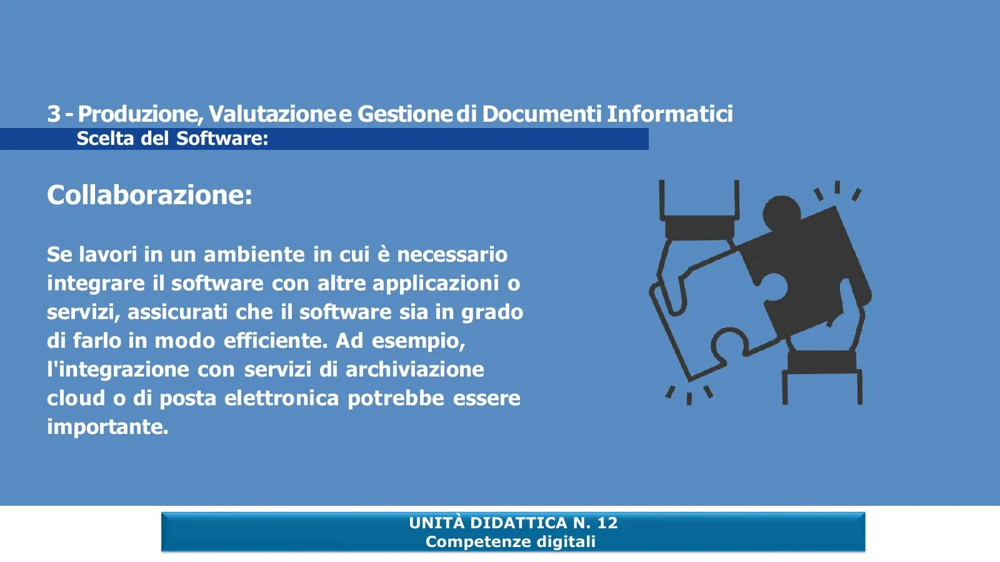
Scelta del Software: Collaborazione: Se lavori in un ambiente in cui è necessario integrare il software con altre applicazioni o servizi, assicurati che il software sia in grado di farlo in modo efficiente. Ad esempio, l'integrazione con servizi di archiviazione cloud o di posta elettronica potrebbe essere importante.
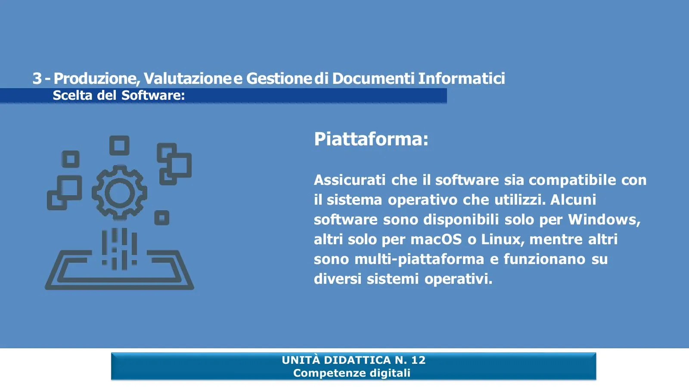
Scelta del Software: Piattaforma: Assicurati che il software sia compatibile con il sistema operativo che utilizzi. Alcuni software sono disponibili solo per Windows, altri solo per macOS o Linux, mentre altri sono multi-piattaforma e funzionano su diversi sistemi operativi.
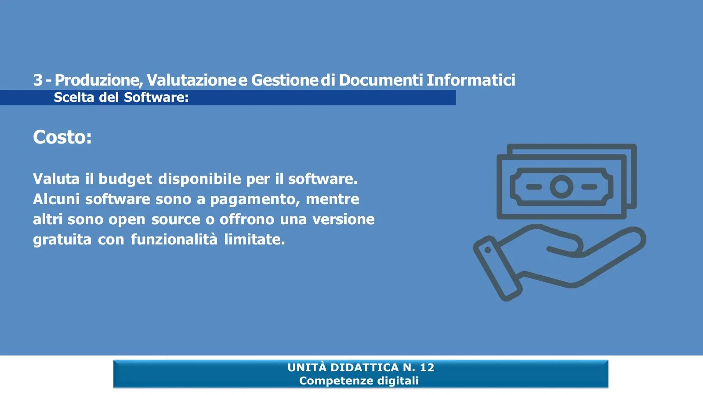
Scelta del Software: Costo: Valuta il budget disponibile per il software. Alcuni software sono a pagamento, mentre altri sono open source o offrono una versione gratuita con funzionalità limitate.
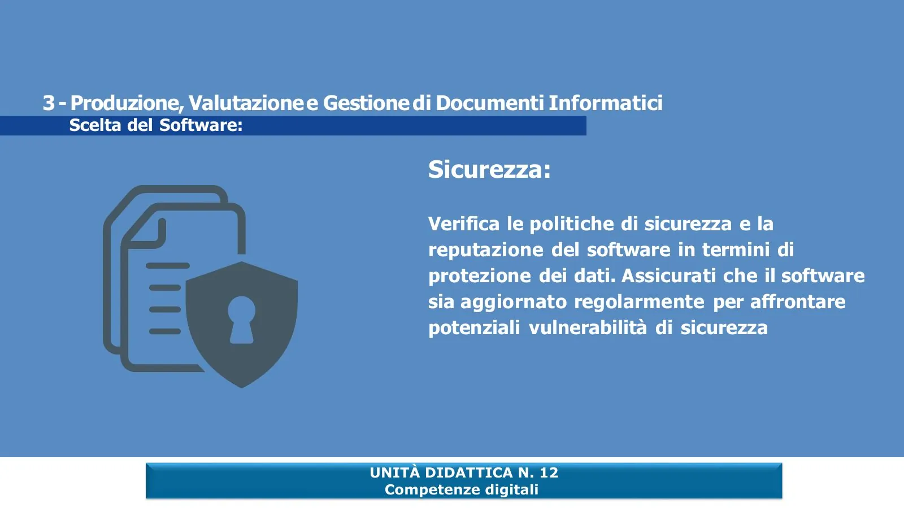
Scelta del Software: Sicurezza: Verifica le politiche di sicurezza e la reputazione del software in termini di protezione dei dati. Assicurati che il software sia aggiornato regolarmente per affrontare potenziali vulnerabilità di sicurezza
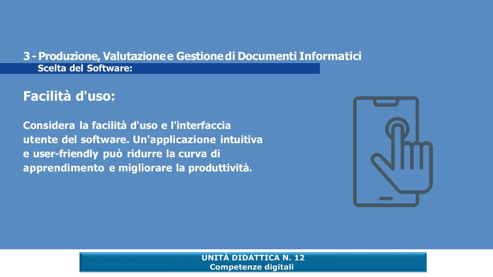
Scelta del Software: Facilità d'uso: Considera la facilità d'uso e l'interfaccia utente del software. Un'applicazione intuitiva e user-friendly può ridurre la curva di apprendimento e migliorare la produttività.
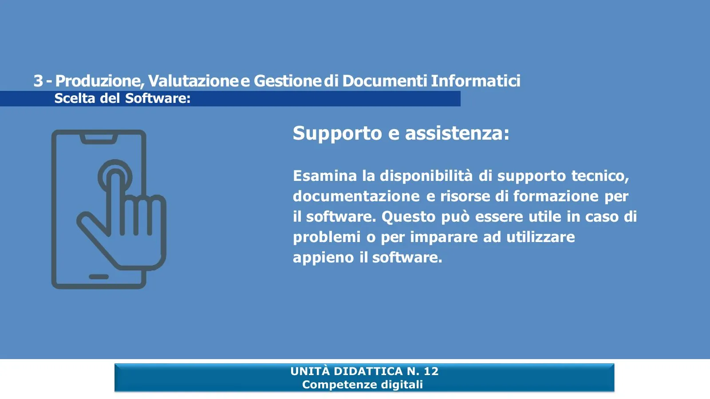
Scelta del Software: Supporto e assistenza: Esamina la disponibilità di supporto tecnico, documentazione e risorse di formazione per il software. Questo può essere utile in caso di problemi o per imparare ad utilizzare appieno il software.
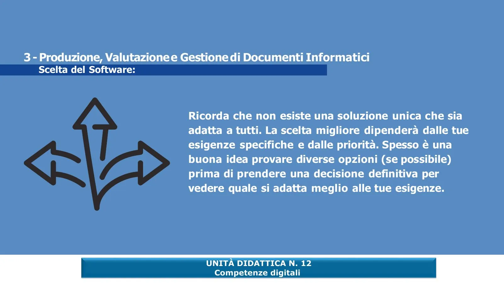
Scelta del Software: Ricorda che non esiste una soluzione unica che sia adatta a tutti. La scelta migliore dipenderà dalle tue esigenze specifiche e dalle priorità. Spesso è una buona idea provare diverse opzioni (se possibile) prima di prendere una decisione definitiva per vedere quale si adatta meglio alle tue esigenze.
Quale suite per la vostra attività?
Checkpoint: che cosa portiamo a casa
Online e offline convivono: scegliete in base a dove e come lavorate.
Open source riguarda la licenza, non il prezzo né la sicurezza.
Usate stili e formule: il documento si aggiorna da solo.
Conservate il file modificabile e inviate il PDF.
La scelta del software si fa su criteri pesati, non per abitudine.
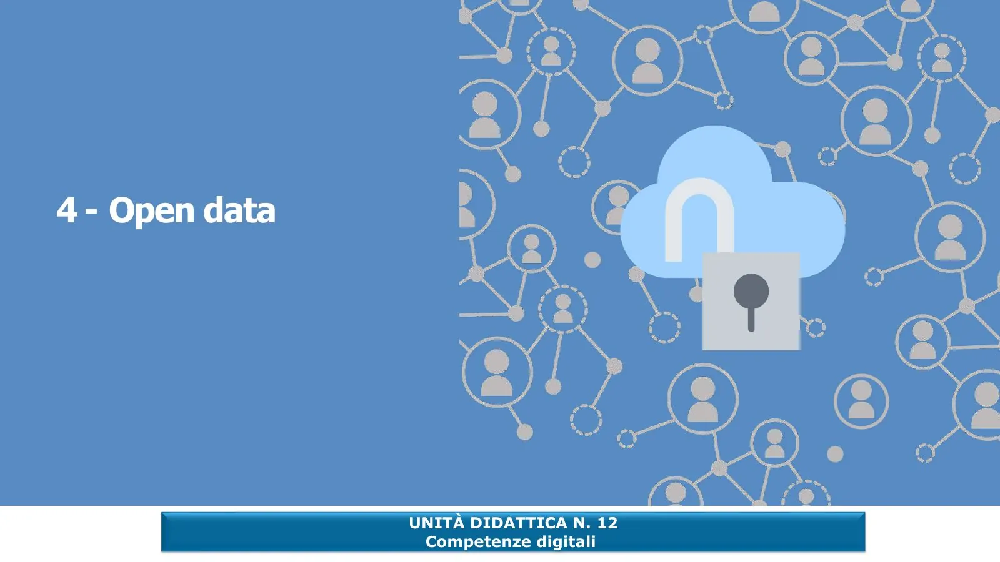
Sezione 4 · Open data
Per aprire la vostra attività, quale numero vi manca?
Quante persone abitano nel raggio di un chilometro? Quanti concorrenti ci sono? Quanto costa un locale? Quanti turisti arrivano in agosto? Scrivetelo in chat: alla fine della sezione lo avremo trovato, gratis.
Open data: pubblici, aperti, gratuiti
🏛️
Pubblici
Li raccoglie la PA con i soldi di tutti: ISTAT, Comuni, Regioni, Agenzia delle Entrate, Camere di Commercio.
🔓
Aperti
Hanno una licenza che permette di riusarli, anche per fare impresa, e un formato leggibile dai programmi.
€0
Gratuiti
Nessun costo: la stessa analisi che una grande azienda paga a una società di ricerche, voi la fate con i dati pubblici.
Per i giovani imprenditori sono la fonte più economica di informazioni sul mercato: il vantaggio è saperli trovare e leggere.
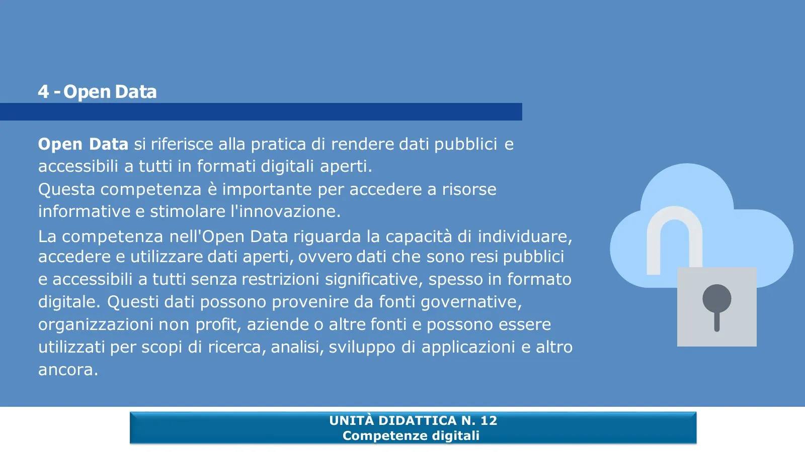
Open Data si riferisce alla pratica di rendere dati pubblici e accessibili a tutti in formati digitali aperti. Questa competenza è importante per accedere a risorse informative e stimolare l'innovazione. La competenza nell'Open Data riguarda la capacità di individuare, accedere e utilizzare dati aperti, ovvero dati che sono resi pubblici e accessibili a tutti senza restrizioni significative, spesso in formato digitale. Questi dati possono provenire da fonti governative, organizzazioni non profit, aziende o altre fonti e possono essere utilizzati per scopi di ricerca, analisi, sviluppo di applicazioni e altro ancora.
Quando un dato è davvero «aperto»
⚖️
Licenza
Permette a chiunque di riutilizzarlo, anche per fini commerciali (es. CC BY 4.0, IODL 2.0).
📄
Formato aperto
Leggibile dai programmi e non legato a un solo produttore (es. CSV, JSON).
€0
Gratuito
Disponibile gratis o a costi marginali di riproduzione.
Codice dell’amministrazione digitale, art. 1, c. 1, lett. l-ter; art. 52 CAD («open by default»: i dati pubblicati dalla PA senza licenza si intendono aperti); D.Lgs. 36/2006 e D.Lgs. 200/2021 (direttiva UE 2019/1024 sui dati aperti).
Le 5 stelle degli open data
Una scala proposta da Tim Berners-Lee, l’inventore del Web: più stelle, più facile riutilizzare i dati.
È open data o no?
Le licenze: che cosa posso farci
Licenza
Posso usarla per l’impresa?
A che condizione
CC0 / pubblico dominio
Sì
Nessuna
CC BY 4.0
Sì
Citare la fonte
IODL 2.0 (licenza italiana per i dati pubblici)
Sì
Citare la fonte
CC BY-SA
Sì
Citare e ridistribuire le elaborazioni con la stessa licenza
CC BY-NC
No
Vietato l’uso commerciale
Nessuna licenza, sito privato
No
Tutti i diritti riservati, salvo permesso
Le licenze Creative Commons sono le più diffuse; IODL è quella usata da molte PA italiane. Citare la fonte costa una riga e vi rende credibili.
Posso usare questo dato per la mia impresa?
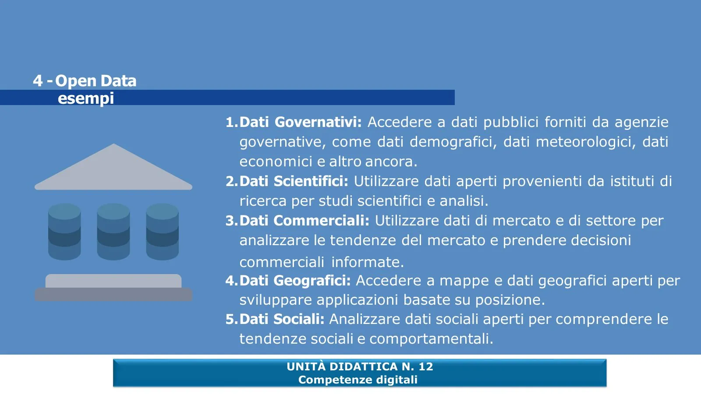
esempi 1. Dati Governativi: Accedere a dati pubblici forniti da agenzie governative, come dati demografici, dati meteorologici, dati economici e altro ancora. 2. Dati Scientifici: Utilizzare dati aperti provenienti da istituti di ricerca per studi scientifici e analisi. 3. Dati Commerciali: Utilizzare dati di mercato e di settore per analizzare le tendenze del mercato e prendere decisioni commerciali informate. 4. Dati Geografici: Accedere a mappe e dati geografici aperti per sviluppare applicazioni basate su posizione. 5. Dati Sociali: Analizzare dati sociali aperti per comprendere le tendenze sociali e comportamentali.
Dove si trovano: i portali da conoscere
Portale
Che cosa c’è
Serve per
dati.gov.it
Catalogo nazionale: rimanda ai dataset di tutte le PA
Cercare per parola chiave e territorio
ISTAT · demo.istat.it · dati.istat.it
Popolazione per età, famiglie, imprese, consumi, turismo
Dimensione del mercato
registroimprese.it · Camere di Commercio
Imprese attive per settore e comune (visure a pagamento, statistiche gratuite)
Concorrenza
Agenzia delle Entrate · OMI
Quotazioni immobiliari per zona
Costo del locale
dati.regione.campania.it
Turismo, trasporti, bandi, sanità, ambiente
Dati locali
Dipartimento Finanze (MEF)
Redditi dichiarati per comune
Capacità di spesa della zona
data.europa.eu · Eurostat
Confronti europei, e-commerce, imprese
Tendenze del settore
Come si legge la scheda di un dataset
Imprese attive per comune e sezione ATECO – 2025
Pubblicato da: Camera di Commercio di Caserta · Aggiornato: 2026-02-10
CSVXLSXJSON · Licenza: CC BY 4.0
Copertura: provincia di Caserta · Frequenza: annuale · Unità: numero di imprese
Tag: imprese, ATECO, economia
Titolo e anno: è il dato che cercate?
Ente: chi lo produce è affidabile?
Aggiornamento: è recente?
Licenza: posso usarlo per l’impresa?
Formato: scaricate il CSV
Copertura e unità: provincia? comune? imprese o addetti?
Da ISTAT al vostro foglio di calcolo in 4 passi
1CercateSu demo.istat.it: «Popolazione residente al 1° gennaio», scegliete regione, provincia e comune.
2FiltrateEtà per singolo anno o per classi; maschi, femmine, totale.
3ScaricateEsportate in CSV e apritelo con Calc, Excel o Fogli Google.
4SommateUna formula =SOMMA() sulla fascia d’età che vi interessa: ecco il vostro pubblico.
Tempo necessario la prima volta: 15 minuti. La seconda: 3.
I formati che incontrerete
CSV
Tabella in testo semplice, colonne separate da virgola o punto e virgola. Si apre con qualsiasi foglio di calcolo. Il vostro formato
XLSX / ODS
Fogli di calcolo già formattati, spesso con più schede e note. Comodi, ma controllate le celle unite.
JSON
Formato per i programmi e le app. Non si legge a occhio: serve un software o un programmatore.
PDF
Da leggere, non da analizzare: i numeri vanno ricopiati o estratti. Livello più basso della scala a 5 stelle.
API
Un «rubinetto» da cui un sito o un’app prende i dati aggiornati in automatico (es. orari dei bus nella vostra app).
GeoJSON / SHP
Dati con la posizione: si mostrano su una mappa con programmi come QGIS (gratuito).
Dal CSV al grafico, controllando i metadati
Prima di analizzare: pulire i dati
La scheda del dataset: 7 campi e la citazione è pronta
Dalla domanda alla decisione: i primi tre passi
1Domanda«Quante famiglie con figli ci sono nel mio comune?» Una domanda precisa, con un numero come risposta.
2DatasetCerco su dati.gov.it o ISTAT; controllo ente, licenza, data di aggiornamento, copertura.
3PuliziaScarico il CSV, tolgo doppioni e valori strani, controllo le unità di misura.
La domanda viene prima del dato: chi scarica dati «per vedere» si perde; chi cerca una risposta la trova.
Dalla domanda alla decisione: gli ultimi tre passi
4AnalisiFiltro la fascia d’età, sommo, confronto con la provincia: 4.100 famiglie, il 12% in più della media.
5GraficoScelgo il grafico giusto, metto titolo, unità e «Fonte: ISTAT 2025».
6DecisioneScrivo nel piano: «4.100 famiglie con figli nel comune: il mio pubblico principale».
Il risultato non è un grafico: è una frase con un numero e una fonte, che entra nel piano d’impresa.
Quale grafico per quale domanda?
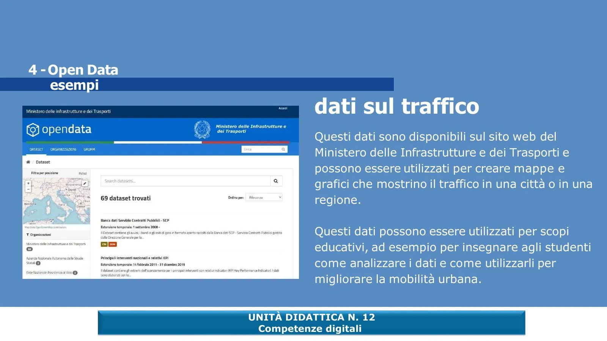
esempi dati sul traffico Questi dati sono disponibili sul sito web del Ministero delle Infrastrutture e dei Trasporti e possono essere utilizzati per creare mappe e grafici che mostrino il traffico in una città o in una regione. Questi dati possono essere utilizzati per scopi educativi, ad esempio per insegnare agli studenti come analizzare i dati e come utilizzarli per migliorare la mobilità urbana.
Caso 1 · Luca vuole aprire un bar vicino alla stazione
Le domande
Quante persone passano dalla stazione ogni giorno?
A che ora?
Quanti bar ci sono già nel raggio di 500 m?
I dati aperti usati
Pendolari in entrata e uscita dal comune: ISTAT, matrice del pendolarismo
Orari dei treni e dei bus in formato GTFS: open data regionali
Imprese ATECO 56.30 per comune: Registro Imprese
Decisione: il picco è tra le 6:30 e le 8:30; i 3 bar esistenti aprono alle 7. Luca apre alle 6 e punta sulla colazione da asporto.
Quanto vale il vostro mercato? Partite dalla popolazione
Quanti concorrenti sono troppi?
ATECO: il codice del vostro settore
Che cos’è
La classificazione delle attività economiche usata da ISTAT, Agenzia delle Entrate e Camere di Commercio. Dal 2025 è in vigore la versione ATECO 2025.
Si sceglie quando si apre la partita IVA e compare nella visura.
Esempi
18.12
Altra stampa
56.10
Ristoranti e attività di ristorazione mobile
47.91
Commercio al dettaglio via Internet
96.02
Parrucchieri e trattamenti estetici
55.20
Alloggi per vacanze e brevi soggiorni
Per contare i concorrenti serve il codice: cercate il vostro su istat.it/ateco e annotatelo nel piano d’impresa.
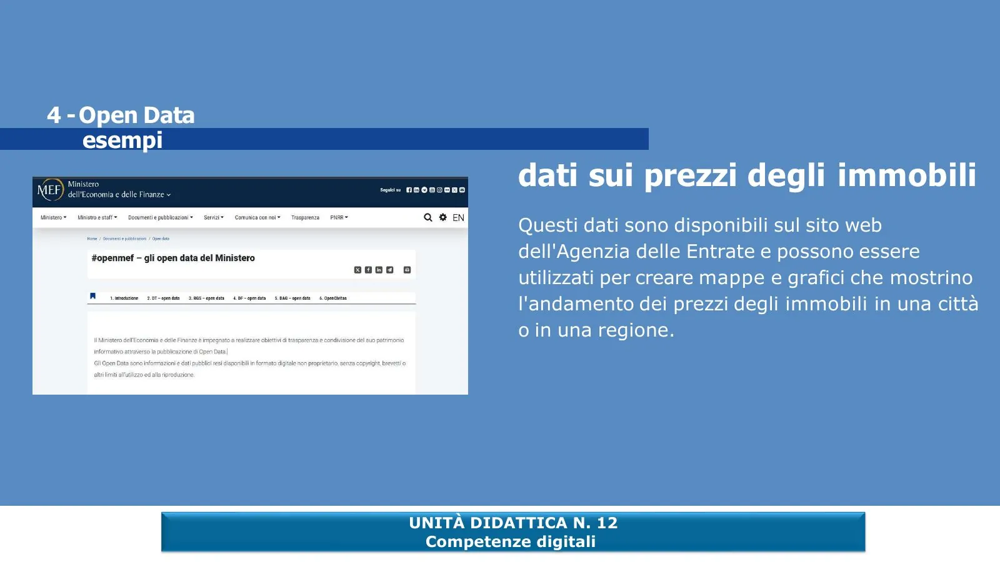
esempi dati sui prezzi degli immobili Questi dati sono disponibili sul sito web dell'Agenzia delle Entrate e possono essere utilizzati per creare mappe e grafici che mostrino l'andamento dei prezzi degli immobili in una città o in una regione.
Caso 2 · Sara vende ceramiche artigianali online
Le domande
Quanti italiani comprano online oggetti per la casa?
In quali regioni di più?
Il settore cresce?
I dati aperti usati
ISTAT «Cittadini e ICT»: % di chi ha acquistato online negli ultimi 12 mesi, per regione ed età
Eurostat: e-commerce per tipo di prodotto
Registro Imprese: concorrenti ATECO 47.91 (commercio via Internet)
Decisione: il pubblico 25–44 anni del Nord compra online più spesso: Sara imposta spedizioni e pubblicità su quelle regioni, non solo sulla sua provincia.
Quanto costa il locale? Le quotazioni OMI
Dove aprire? Decidere con i dati
Quanto può spendere la vostra zona?
Redditi dichiarati per comune
Il Dipartimento delle Finanze pubblica ogni anno, in open data, numero di contribuenti e reddito medio per ogni comune italiano.
Uso: confrontare il reddito medio del vostro comune con quello provinciale per fissare prezzi e posizionamento.
Spesa delle famiglie
ISTAT, «Spese per consumi delle famiglie»: quanto spende in media una famiglia al mese per alimentari, abbigliamento, cura della persona, tempo libero, per regione.
Uso: stimare la spesa media annua per persona nella simulazione del mercato potenziale.
Due dati gratuiti che trasformano «la gente qui spende» in «reddito medio 19.800 €, spesa mensile per cura della persona 48 € a famiglia».
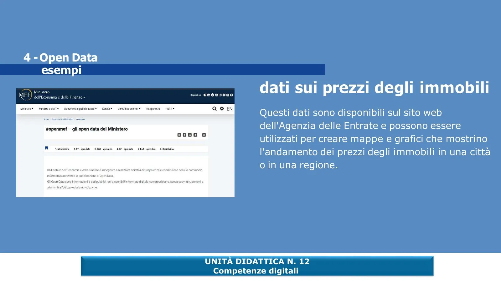
esempi dati sui prezzi degli immobili Questi dati sono disponibili sul sito web dell'Agenzia delle Entrate e possono essere utilizzati per creare mappe e grafici che mostrino l'andamento dei prezzi degli immobili in una città o in una regione.
Caso 3 · Marco apre un B&B in provincia
Le domande
Quanti turisti arrivano e per quante notti?
In quali mesi?
Quante strutture ci sono già?
I dati aperti usati
ISTAT e Regione Campania: arrivi e presenze per comune e mese
Elenco regionale delle strutture ricettive
Attrattori: siti UNESCO, eventi (Comune)
Decisione: le presenze crescono del 6% l’anno ma si concentrano tra aprile e ottobre: Marco calcola i ricavi su 7 mesi, non su 12, e propone pacchetti invernali alle scuole.
Il settore cresce? Leggere una tendenza senza farsi ingannare
Il dato non è pubblicato? Chiedetelo
Accesso civico generalizzato (FOIA)
D.Lgs. 33/2013, art. 5, c. 2: chiunque può chiedere dati e documenti a una PA, senza motivare.
Risposta entro 30 giorni.
Gratuito, salvo il costo delle copie.
Esempio per un’impresa
«Chiedo al Comune il numero di licenze per attività di ristorazione rilasciate negli ultimi 5 anni, per via.»
«Chiedo alla Regione i dati mensili sugli arrivi turistici nel mio comune.»
Si invia dalla PEC, all’ufficio indicato nella sezione «Amministrazione trasparente» del sito dell’ente.
Caso 4 · Giulia e la stampa personalizzata per scuole e associazioni
Le domande
Quante scuole e quante associazioni sportive ci sono in provincia?
Quanti alunni?
Chi fa già stampa digitale?
I dati aperti usati
Anagrafe delle scuole e alunni per istituto: open data del Ministero dell’Istruzione (dati.istruzione.it)
Registro nazionale delle attività sportive dilettantistiche
Registro Imprese ATECO 18.12
Decisione: 180 scuole e 24.000 alunni in provincia, 4 concorrenti: Giulia scrive nel piano «mercato potenziale: 180 clienti istituzionali» e lo cita con fonte e anno.
I dataset per il vostro settore
Dove finiscono gli open data nel piano d’impresa
Sezione del piano / descrizione
Dato aperto da citare
Esempio di frase
Idea di business e mercato
Popolazione per età, famiglie, redditi
«Nel comune vivono 4.100 famiglie con figli (ISTAT 2025)»
Concorrenza
Imprese attive per ATECO
«9 imprese del settore, 0,24 ogni 1.000 abitanti contro 0,29 in provincia»
Sede operativa
Quotazioni OMI, mobilità
«Canone stimato 300–350 €/mese (OMI zona semicentrale)»
Ricavi attesi
Consumi medi, presenze turistiche, trend
«Spesa media 60 €/anno; 5% del pubblico raggiungibile»
Strategie promozionali
Uso di Internet e social per età
«Il 78% dei 25–44enni acquista online (ISTAT)»
Attenzione: i dati delle persone non sono mai open data
Non si può
Raccogliere nomi e telefoni da siti o social per fare pubblicità
Pubblicare l’elenco dei propri clienti
Comprare «liste» di contatti senza consenso
Si può
Usare statistiche aggregate e anonime (ISTAT, Comune)
Raccogliere contatti con un consenso chiaro (newsletter)
Chiedere alla PA dati non pubblicati con l’accesso civico (D.Lgs. 33/2013, art. 5)
GDPR (Reg. UE 2016/679): i dati personali si trattano solo con una base giuridica. Gli open data sono aggregati o riguardano enti e imprese, non singole persone.
Vero o falso?
Laboratorio (a casa o in aula): tre dati per il vostro mercato
1
Popolazione
Residenti del vostro comune per età (ISTAT). Quante persone del vostro target ci sono?
2
Concorrenza
Imprese attive nel vostro settore (codice ATECO) in provincia: Camera di Commercio o portali regionali.
3
Costi
Quotazioni OMI della zona del locale (Agenzia delle Entrate): quanto può costare l’affitto?
Per ogni dato compilate la scheda: ente, anno, unità di misura, licenza, link. Consegna: un foglio di calcolo con le tre schede, condiviso in sola lettura con il docente entro l’Incontro 4.
Checkpoint: open data
Open data = licenza aperta + formato aperto + gratuiti (CAD, art. 1 e 52).
Partite dalla domanda, poi cercate il dataset su dati.gov.it, ISTAT, Registro Imprese, OMI.
Controllate licenza e data; pulite i dati prima di analizzarli.
Mercato, concorrenza, sede, ricavi: ogni numero del piano con la sua fonte.
I dati delle persone non sono open data.
Compito per l’Incontro 4 (lunedì 16)
Da consegnare
Il vostro codice ATECO.
Tre dati con la scheda completa (ente, anno, unità, licenza, link): pubblico, concorrenti, costo del locale.
Una frase per ciascuno, pronta per il piano d’impresa.
Come
Foglio di calcolo o documento, nome 2026-11-16_Dati_Cognome_v01.
Condiviso con il docente in sola lettura, oppure inviato come PDF.
Tempo stimato: 45 minuti.
Lunedì iniziamo con 5 minuti di confronto sui dati trovati, poi passiamo a sicurezza e vendita online.
Con la presentazione selezionata: →spazio avanti · ← indietro · F schermo intero · N note · O indice · L laser · B schermo nero · numero + Invio per saltare. Nelle simulazioni usate mouse o dito: i tasti funzionano di nuovo appena cliccate fuori dai campi.
Note del docente
Scaletta · ven 13 novembre · 2 ore (versione estesa) · lezione online
Come si distribuisce il tempo
0:00Accoglienza online, ripresa degli Incontri 1 e 2, i documenti della domanda
0:05Slide 1–16: online/offline, open source, LibreOffice, formati, stili, foglio di calcolo, 5.000 caratteri
0:30Slide 17–40: suite a confronto, criteri di scelta, matrice pesata
0:45Slide 41–42: open data, definizione, licenze, è open data?
1:00Pausa
1:05Slide 43: portali, formati, CSV→grafico, pulizia, scheda del dataset, quale grafico
1:25Slide 44–45: casi (bar, e-commerce), mercato potenziale, concorrenti, affitto OMI, scegliere la zona
1:45Slide 46: casi (B&B, stampa), trend, dataset per settore, open data nel piano, dati personali, checkpoint
1:55Test (da completare anche dopo l’incontro)
Verifica formativa · 10 domande · soglia 7/10
Test di fine incontro
Le opzioni compaiono in ordine casuale. Con almeno 7 risposte corrette si apre l’Incontro 4.